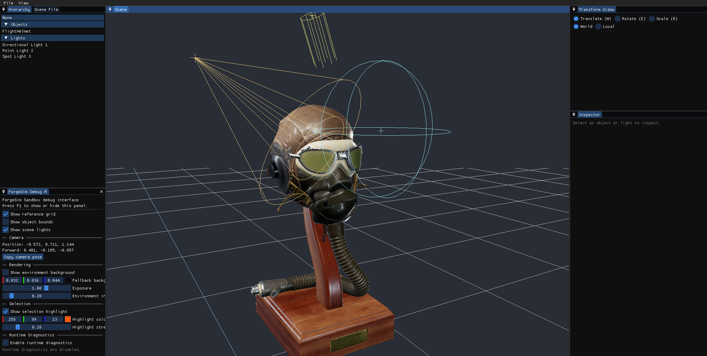
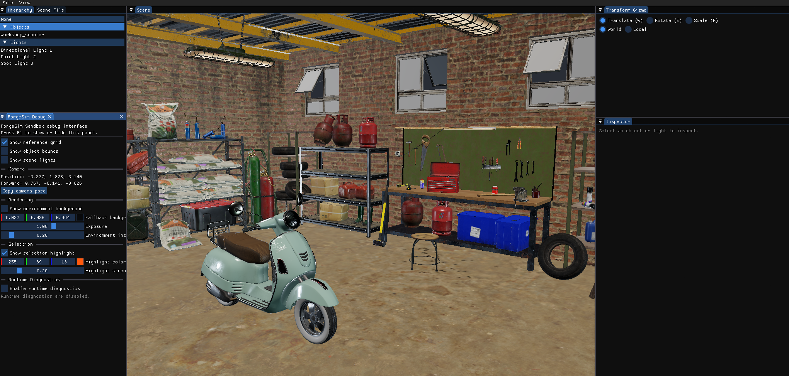

Rendering
Loads glTF scenes and materials into an OpenGL rendering pipeline with metallic-roughness PBR, image-based lighting, HDR rendering, exposure control, and tone mapping.
A modern C++ engine and interactive simulation editor.
Rendering, glTF assets, editable lighting, and practical scene tools.
Requires OpenGL 4.6 · Unsigned preview
Run the installer and follow the setup instructions. Alternatively, extract the entire portable ZIP and launch ForgeSimSandbox.exe.
The installer is unsigned. Windows or your browser may display a publisher or download-reputation warning.
Includes the PBR material gallery and HDR environment. Flight Helmet and workshop assets shown on this page are not bundled.
This is an early development preview. Physics, mechanical interactions, and VR are not yet available.

Current implementation
Loads glTF scenes and materials into an OpenGL rendering pipeline with metallic-roughness PBR, image-based lighting, HDR rendering, exposure control, and tone mapping.
Provides a docked workspace with scene hierarchy, object and light selection, property controls, transform gizmos, and undo/redo for transform edits.
Uses fixed-timestep scheduling with bounded catch-up. Automated tests cover selected core, asset-processing, selection, and editor behaviors.
Engineering decisions
Rendering frequency varies with scene complexity and hardware. Advancing simulation directly by each frame's elapsed time would make its update interval vary too.
ForgeSim accumulates elapsed time and advances scheduled simulation updates at a fixed interval. Rendering runs separately, and catch-up work is bounded so a slow frame cannot trigger unlimited simulation updates.
Bounding catch-up limits the work performed after a stall, but sustained overload requires an explicit policy for handling simulation time. A fixed timestep alone does not guarantee deterministic results.
A rendering demonstration needs more than geometry. Materials, textures, scene transforms, and incomplete source data all affect whether an imported asset behaves correctly.
ForgeSim's glTF path handles multiple meshes, primitives, materials, and node transforms. It supplies fallback textures and generates missing normals or tangents where supported by the source data.
Supporting a focused asset path keeps the implementation manageable. Compatibility still depends on the features used by each asset; this does not imply support for every glTF extension or material model.
Validation
ForgeSim combines automated tests for selected engine behaviors with visual inspection of rendered scenes. Tests cover areas such as fixed-step scheduling, asset processing, selection, and transform-edit history.
A material gallery provides controlled comparisons of metallic and dielectric surfaces, roughness, normal maps, occlusion, and emissive inputs. Imported assets such as Flight Helmet exercise multiple materials and textures within the editor.

Development direction
ForgeSim remains in active development. The current work establishes rendering and editor infrastructure; the longer-term direction is interactive mechanical systems, equipment behavior, and procedural training scenarios.
Future work includes expanding simulation capabilities, improving authoring workflows, and introducing immersive interaction as the underlying systems mature. These are development goals, not completed features.
The repository contains implementation details, build instructions, known limitations, and the evolving roadmap.